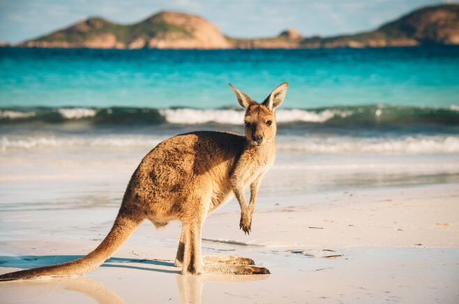

A Páscoa na Austrália apresenta uma peculiaridade fascinante que a difere do resto do mundo: a rejeição do Coelhinho da Páscoa. No país, o coelho é considerado uma praga agrícola devastadora que causa danos milionários à flora e fauna nativas. Por isso, os australianos elegeram um mascote diferente para a data: o "Easter Bilby" (Bilby da Páscoa), um pequeno marsupial nativo com orelhas compridas que está ameaçado de extinção.
O movimento em prol do Bilby começou nos anos 90, e hoje, é comum encontrar chocolates e pelúcias em formato de Bilby nas lojas. Parte dos lucros das vendas desses doces é frequentemente revertida para programas de conservação da espécie. Essa mudança não só tornou a Páscoa australiana única, como também ajudou a aumentar a conscientização ambiental entre as crianças.
Outra grande atração da época é o "Sydney Royal Easter Show", um enorme evento agrícola que ocorre anualmente durante duas semanas em Sydney. O festival combina feira de agropecuária, parque de diversões, competições de animais e degustação de alimentos. Além disso, o tradicional "Hot Cross Bun", um pãozinho doce com especiarias e uvas-passas marcado com uma cruz, é consumido exaustivamente no feriado.
